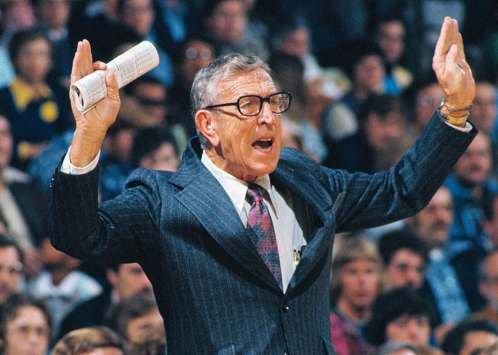
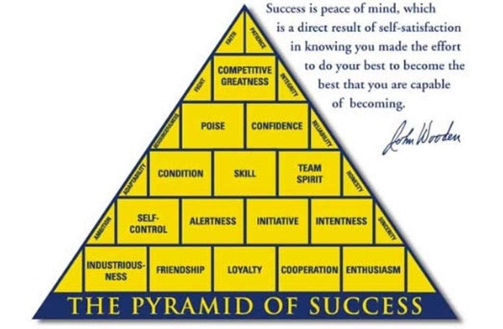

Coach Wooden
Coach Wooden's Maxims

'There's nothing you know that you havn't learnt from someone else'. My father used to repeat that that to my three brothers and me while growing up in struggling Indiana farm in 1920s. I didn't appreciate it at the time, but now I realize he was reminding us that life is a learning opportunity and lessons are being constantly thought all around us. I think he was also reminding us to be thankful for each lesson an individual offers, wittingly or unwittingly, because those lessons become a kind of borrowed experience.
— Joshua Wooden
John Wooden's seven rules for living
- Be true to yourself.
- Make each day your masterpiece.
- Help others.
- Drink deeply from good books.
- Make friendship a fine art.
- Build a shelter against a rainy day.
- Pray for guidance and give thanks for your blessings every day.
'Mr. Curtis believed in fundamentals. He believed that you can't have a good basketball game without a good basketball team, you can't have a good team without good players, you can't have good players without good skills, and you can't have good skills without good practice. He wasn't concerned with putting on a good show for the spectators who would pack into the gym for every game. Instead he wanted to make sure his players had a sound sense of the rules and strategy, technique, instinct and most of all, teamwork. If those skills were in place, the game unquestionably would be dynamic'.And so we drilled.
These practices were not simply sessions of rote repetitions. Each one was highly structured, precisely organized series of exercises carefully designed around certain essential elements.
The team that had its fundamentals drilled down to perfection could afford to move with more speed, which meant more chances at the basket. It may sound simple, but it sure worked.Team spirit was another big focus. If you didn't play in a way that lifted the team, you would be sitting on the bench, no matter who you were.
Woodenisms
(1) Fear no opponent. Respect every opponent.
(2) Perfection of the smallest details that make big things happen.
(3) Hustle makes up for many mistakes
(4) Be more interested in character than reputation
(5) Be quick, but don’t hurry
(6) The harder you work, the more luck you will have.
(7) Valid self-analysis is crucial for improvement.
(8) There is no substitute for hard work and careful planning.
The four laws of learning are explanation, demonstration, imitation, and repetition. The goal is to create a correct habit that can be produced instinctively under great pressure.To make sure this goal was achieved, I created eight laws of learning; namely, explanation, demonstration, imitation, repetition, repetition, repetition, repetition, and repetition.
— John Wooden
